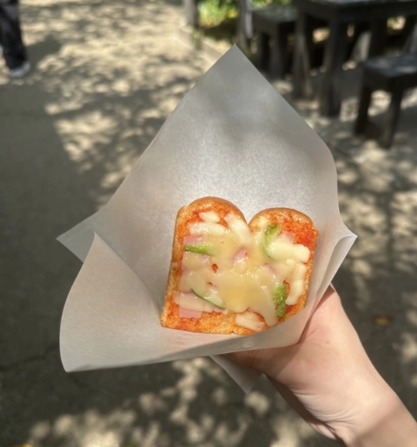
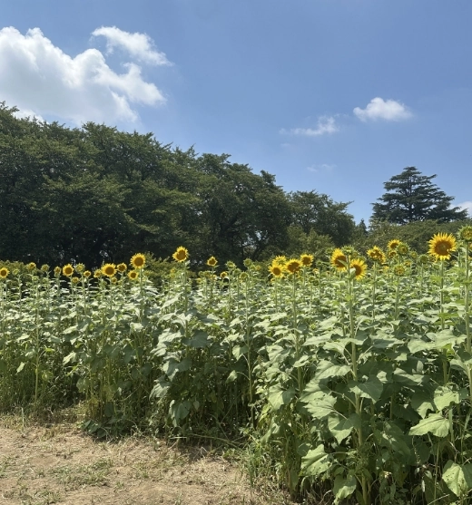
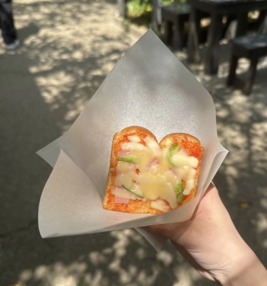
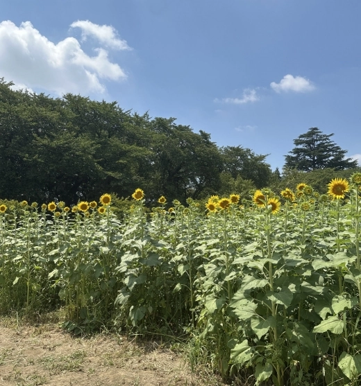

ひまわり畑
埼玉県幸手市の権現堂堤では、毎年夏になると 一面のひまわり畑 が広がります。
ひまわり祭りの期間中は、 約10万本のひまわり が見頃を迎え、夏らしい風景を楽しめる人気スポットです。
私が訪れたのは8月2日。祭り初日でまだ五分咲きほどでしたが、咲きはじめの花々が 太陽に向かってぐっと伸びる様子 には、これから満開へ向かう力強さを感じました。
早めのタイミングでも、 夏の風景とエネルギー をしっかり感じられるスポットです。

- 色イメージ
- 黄色（#F6C443）
- 見頃
- 例年8月上旬
- 住所
- 埼玉県幸手市内国府間887番地3
- 営業時間
- 終日開放
- 料金
- 入園無料
おすすめ撮影スポット

ひまわりをアップで一枚。
ひまわりにカメラを向けた１枚。
アクセス
- 電車
- 東武日光線「幸手駅」
→徒歩30分 - 車
- 圏央道 幸手IC から約 10 分
ギャラリー


 


